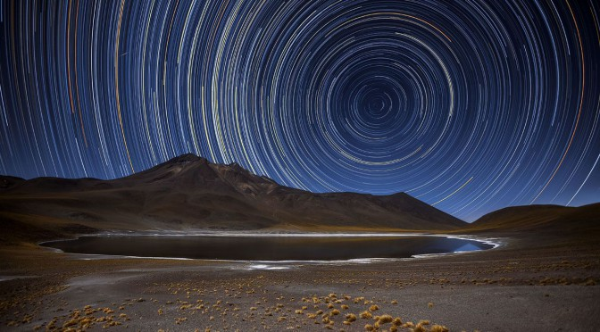
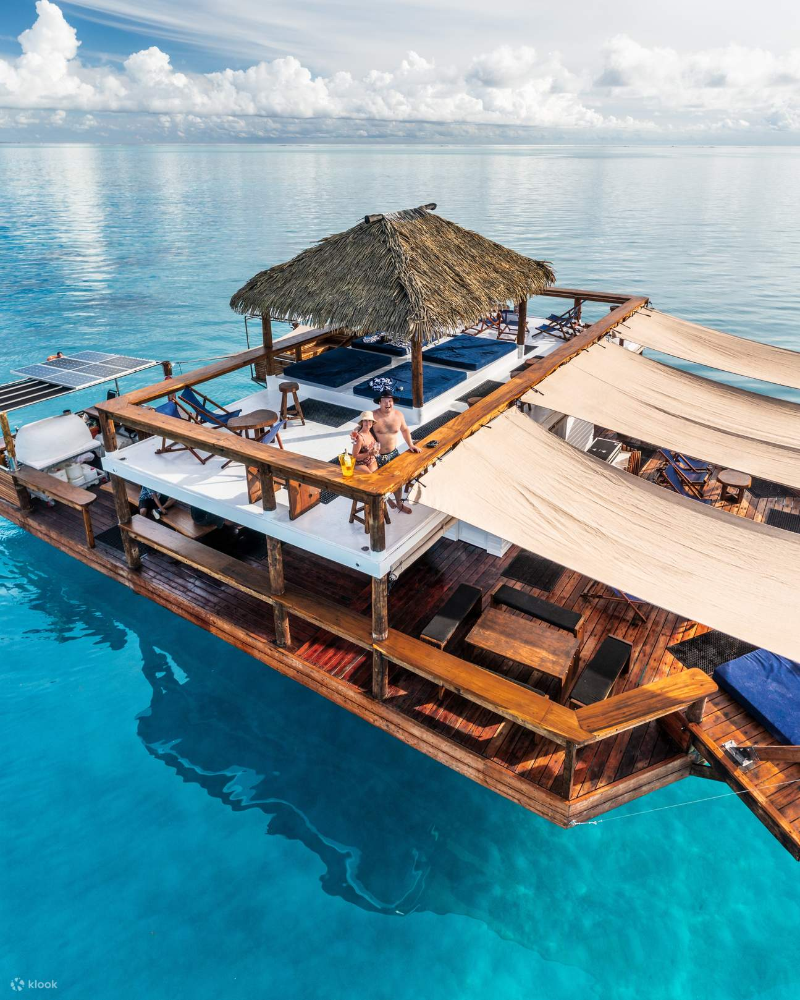

🌺 Nos îles d'exception

Maldives
Lagons turquoise, villas sur pilotis et sérénité absolue.

Chili
Déserts, volcans et paysages extrêmes entre mer et Andes.

Fidji
Plages sauvages, eaux cristallines et traditions chaleureuses.